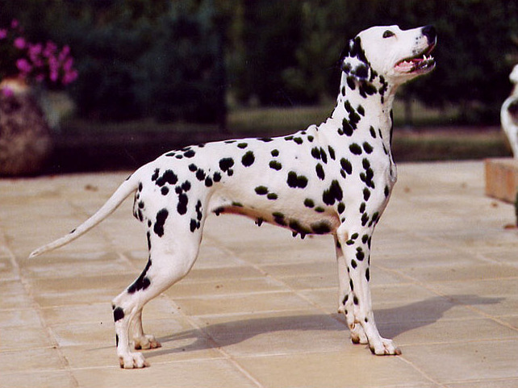

Formålet er at give dig et indblik i Annesofie's liv
StudiegruppeHvem er Annesofie?
- Mor til Holger og Otto
- Kærster med Mike
- Hundemor til dalmatineren vilde Rolf
- Arbejder som Fysioterapeut
- Medlem af HPM Dirty Paws- løbeklub med hund
- Kan spise 500 gram slik på en aften
- Drømmer om at backpacke i Asien med ungerne inden for nærmeste fremtid
- Elsker farver - prøver at få flere farver i hjemmet
- Vil gerne være med på genbrugstrenden, men har svært ved at købe genbrug

Fra en professionsbachelor som fysioterapeut til en kandidat i it og webkommunikation
I mit arbejde som fysioterapeut anvender jeg flere forskellige it-systemer, og jeg oplevet ofte at systemerne ikke er synkroniseret og ikke er brugervenlie, og det vil jeg gerne ændre. Jeg har en forhåbning om, at jeg med denne uddannelse kan være med til at udvikle brugervenlige informationsprodukter og digitale applikationer til sundhedsvæsnet, hvor brugerens adfærd og behov er i centrum. Jeg mener, at jeg med en professionsbachelor i fysioterapi samt en cand.it i webkommunikation vil få en unik profil, som især vil være attraktiv inden for sundhedsvæsnet og for virksomheder som arbejder med sundhedsteknologi